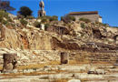

Festivals of Demeter
Demeter had two major religious festival devoted to her, the Thesmophoria and the Mysteries at Eleusis. Thesmophoria, celebrations in honour of Demeter were held in Athens and throughout the Greek world. The Thesmophoria which was the subject of one of Aristophanes’ comedies Thesmophoriazusae, was a festival celebrated only by women. The Thesmophoria were celebrated in Athens during a three-day festival in September. Only married women could attend the festival, for which they would leave their homes and spend the three days at the temple of the goddess. Women would process to the temple, where they would stay the night, before spending the second day in fasting. On the third day they would celebrate what was known as the Kalligeneia, or the ‘beautiful birth’. Like the Mysteries at Eleusis, the Thesmophoria were secretive, so we do not know a great deal about their details. But we do know that part of the rites involved digging up the rotted remains of pigs which had been sacrificed previously; the remains were mixed with seeds and put on the altar of Demeter. Indeed, this ritual of taking the remains of pigs may explain the name of the festival ‘thesmo’ meaning ‘deposit’ and ‘phor’ meaning ‘bringing [out]’ (although this could also have meant, ‘bringer of law and order’, in that Demeter and Persephone brought order to the Greek year and to human agriculture). Without details, we also know that there was a sexual aspect to the festival, at which there were phallic symbols and rituals which involved them. The progression of the second and third day of the Thesmophoria, from fasting to celebration of the ‘beautiful birth’, can also be connected with the descent of Persephone into the underworld and her return. The solemn aspect of fasting symbolizes winter, while the feasting symbolizes regeneration. One might compare the fasting of Lent, where a period of solemnity precedes a celebration that is representative (I use the term ‘representative’ only in light of actual eating of food in a Christian context, not in terms of the Easter itself which is not understood as ‘symbolic’ or ‘representative’ within Christian theology) of resurrection and life.
Persephone’s decent into the underworld also demonstrates the two spheres in which the Eleusinian Demeter functioned; as corn goddess, but also as a goddess of the underworld. Persephone is known in both Homer and in Hesiod as an individual, but also in connection with her husband Hades. An important part of the religious festival of the Mysteries at Eleusis was connected with death, and initiates were thought, through their knowledge of the Mysteries, to have had a special fate in the underworld, as is narrated at the end of the Hymn to Demeter (480-2):
'Blessed is he who has seen them, of humans who walk on the earth; but he who has not been enrolled in the rites, who is lacking a share, in death has no matching portion down in the' mouldy gloom.'
Of what exactly did the great festival of the Mysteries consist? The problem in studying this religious festival of Demeter is that it was considered to divulge mysteries, in Greek mysteria, secret rites into which one had to be initiated. It was therefore profane to divulge any information about them. The historian Pausanias, who provides such thorough accounts of the cults of Zeus Olympios and the oracle at Delphi, felt himself compelled to say that a dream forbade him from writing about Demeter's festival and its rites. The penalty in Athens for revealing information about the mysteries was death, and we know that there were cases in which people were accused of having transgressed the boundaries of secrecy. We must assume then that any contemporary literary document composed by an initiate is incomplete in detail, and this includes the Homeric Hymn to Demeter. This has given a certain mystique to the cult of Demeter at Eleusis which might be compared with the fascination with the Free Masons in more recent times. Although it is an extremely dense and difficult book, Umberto Eco’s Foucault’s Pendulum could be thought to provide for a modern reader a good sense of the mystery surrounding cults of initiation. There were, of course, other such cults in the ancient world; there were mystery cults of Orpheus or Dionysus.
We do, however, know certain things about the festival of the Mysteries which was celebrated for seven days in the autumn, between August and September. Unlike the Thesmophoria, the Eleusinian Mysteries were not exclusive to women. The priestess of Demeter was certainly involved, but male priests controlled the rites at Eleusis. The most important priest at Eleusis was the Hierophant, who was the one who revealed the mysteries to the initiates. The festival began each year with a procession along the sacred way from Athens, some 30 kilometres through the country. The procession or pompe was an important part of many Greek religious festivals, but the procession to Eleusis is a striking example of its importance. Some have compared the modern Catholic peregrination from the north of France to Santiago, or the Muslim journey to Mecca; in both cases, the journey itself is invested with something holy and initiatory. One must imagine up to 30,000 people progressing along the Sacred Way to Eleusis, and the festival atmosphere this would have created. Sacrifices of pigs (which were also prominent in the festival of the Thesmophoria) would have been made previously. Including the sacrifices and the procession, it would probably have taken almost five days for the participants which included initiates, their sponsors and the priesthood to reach Eleusis, where the public and the secret rituals took place.
{kind=link}
{kind=link}
The secret rites were performed in the Telesterion (meaning in Greek an initiation hall) inthe sanctuary in Eleusis. (see image 1) We know that initiates would have been lead into the hall by a torch bearer (the Dadouchos), who is mentioned in several sources; in the Homeric Hymn to Demeter, Demeter’s bearing of torches represents this as she frantically searches the world for Persephone. (see image 2) Sacrifices would have beenmade not only to Demeter, but also to Persephone (Kore) and to Hades. What was actually revealed to the initiates in the Telesterion undoubtedly focuses on initiation into the underworld. As the orator Isocrates(who was writing in the early 4th century B.C.E.) tells us:
Demeter once came to our land, wandering about after her daughter Kore was kidnapped, and since she looked favourable upon our ancestors because of their kindness — which no one other than the initiates is allowed to hear — she gave two gifts to Athens that are, in fact, our most important possessions: the fruits of the earth that have allowed us to live civilized lives and the celebration of the mystery rites that grant to those who share in them glad hopes about the end of their life and about eternity.'
The Homeric Hymn to Demeter is an important source of information for us about these festivals, even while it is simultaneously a literary composition. The myth of Persephone's abduction and Demeter's search for her is the most popular myth connected with Demeter/Ceres in antiquity and was told in many versions. It explains the establishment of the seasons and the practice of agriculture amongst men. It also reflects on the question of mortality and immortality which we have seen is a frequent concern in Classical mythology. Next we will again look at a god who is able to cross between the world of the living and the dead, Hermes.